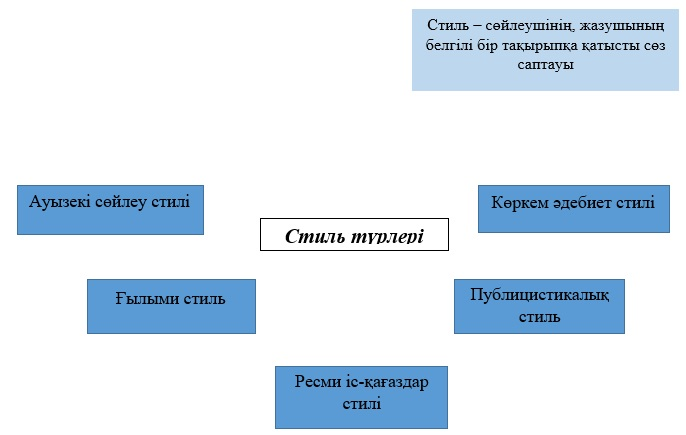

<!DOCTYPE html PUBLIC "-//W3C//DTD XHTML 1.0 Strict//EN" "http://www.w3.org/TR/xhtml1/DTD/xhtml1-strict.dtd">
<html xmlns="http://www.w3.org/1999/xhtml">
<head>
<meta name="keywords" content="" />
<meta name="description" content="" />
<meta http-equiv="content-type" content="text/html; charset=utf-8" />
<title>52 - ҚАЗАҚ ТІЛІ</title>
<link href="style.css" rel="stylesheet" type="text/css" media="screen" />
<link rel="shortcut icon" href="favicon.png" /> 
<script type="text/javascript" src="jwplayer/jwplayer.js"></script>
<meta name="generator" content="TurboSite 1.7.1" />

</head>

<body>
<div id="wrapper">
	<div id="header-wrapper">
	<div id="header">
		<div id="logo">
			<h1><a href="index.html">ҚАЗАҚ ТІЛІ</a></h1>
			<p>Электрондық оқу құралы</p>
		</div>
	</div>
	</div>
	<!-- end #header -->
	<div id="page">
	<div id="page-bgtop">
	<div id="page-bgbtm">
		<div id="content">
			<div class="post">
				<h2 class="title">52</h2>
				<div style="clear: both;">&nbsp;</div>
				<div class="entry">
					
<P class=MsoNormal style="MARGIN: 0cm 0cm 8pt; tab-stops: 142.35pt"><B 
style="mso-bidi-font-weight: normal"><SPAN lang=KZ 
style='FONT-SIZE: 14pt; FONT-FAMILY: "Times New Roman",serif; LINE-HEIGHT: 107%; mso-fareast-font-family: Calibri; mso-ansi-language: KZ; mso-bidi-font-size: 11.0pt'></SPAN></B>&nbsp;</P>
<P class=MsoNormal style="MARGIN: 0cm 0cm 8pt; tab-stops: 142.35pt"><B 
style="mso-bidi-font-weight: normal"><SPAN lang=KZ 
style='FONT-SIZE: 14pt; FONT-FAMILY: "Times New Roman",serif; LINE-HEIGHT: 107%; mso-fareast-font-family: Calibri; mso-ansi-language: KZ; mso-bidi-font-size: 11.0pt'>3–тапсырма.<SPAN 
style="mso-spacerun: yes">&nbsp; </SPAN></SPAN></B><SPAN lang=KZ 
style='FONT-SIZE: 14pt; FONT-FAMILY: "Times New Roman",serif; LINE-HEIGHT: 107%; mso-fareast-font-family: Calibri; mso-ansi-language: KZ; mso-bidi-font-size: 11.0pt'>Төмендегі 
сұрақтарға жауап беру арқылы, кері байланыс жүргізіңіздер.</SPAN></P>
<P class=MsoNormal style="MARGIN: 0cm 0cm 8pt; tab-stops: 142.35pt"><SPAN 
lang=KZ 
style='FONT-SIZE: 14pt; FONT-FAMILY: "Times New Roman",serif; LINE-HEIGHT: 107%; mso-fareast-font-family: Calibri; mso-ansi-language: KZ; mso-bidi-font-size: 11.0pt'></SPAN><SPAN 
lang=KZ 
style='FONT-SIZE: 14pt; FONT-FAMILY: "Times New Roman",serif; LINE-HEIGHT: 107%; mso-fareast-font-family: "Times New Roman"; mso-ansi-language: KZ; mso-bidi-font-size: 11.0pt'><SPAN 
style="mso-list: Ignore">1.<SPAN 
style='FONT: 7pt "Times New Roman"'>&nbsp;&nbsp;&nbsp;&nbsp; 
</SPAN></SPAN></SPAN><SPAN lang=KZ 
style='FONT-SIZE: 14pt; FONT-FAMILY: "Times New Roman",serif; LINE-HEIGHT: 107%; mso-fareast-font-family: Calibri; mso-ansi-language: KZ; mso-bidi-font-size: 11.0pt'>Қазақстанның 
экологиясын жақсарту<SPAN style="mso-spacerun: yes">&nbsp; </SPAN>үшін қандай 
ұсыныс білдіресіз?</SPAN></P>
<P class=MsoNormal style="MARGIN: 0cm 0cm 8pt; tab-stops: 142.35pt"><SPAN 
lang=KZ 
style='FONT-SIZE: 14pt; FONT-FAMILY: "Times New Roman",serif; LINE-HEIGHT: 107%; mso-fareast-font-family: Calibri; mso-ansi-language: KZ; mso-bidi-font-size: 11.0pt'></SPAN><SPAN 
lang=KZ 
style='FONT-SIZE: 14pt; FONT-FAMILY: "Times New Roman",serif; LINE-HEIGHT: 107%; mso-fareast-font-family: "Times New Roman"; mso-ansi-language: KZ; mso-bidi-font-size: 11.0pt'><SPAN 
style="mso-list: Ignore">2.<SPAN 
style='FONT: 7pt "Times New Roman"'>&nbsp;&nbsp;&nbsp;&nbsp; 
</SPAN></SPAN></SPAN><SPAN lang=KZ 
style='FONT-SIZE: 14pt; FONT-FAMILY: "Times New Roman",serif; LINE-HEIGHT: 107%; mso-fareast-font-family: Calibri; mso-ansi-language: KZ; mso-bidi-font-size: 11.0pt'>Экологиялық 
мәселеге судың, ауаның ластануы жатады ма?</SPAN><SPAN lang=KZ 
style='FONT-SIZE: 14pt; FONT-FAMILY: "Times New Roman",serif; LINE-HEIGHT: 107%; mso-fareast-font-family: "Times New Roman"; mso-ansi-language: KZ; mso-bidi-font-size: 11.0pt'><SPAN 
style="mso-list: Ignore">3.<SPAN 
style='FONT: 7pt "Times New Roman"'>&nbsp;&nbsp;&nbsp;&nbsp; 
</SPAN></SPAN></SPAN><SPAN lang=KZ 
style='FONT-SIZE: 14pt; FONT-FAMILY: "Times New Roman",serif; LINE-HEIGHT: 107%; mso-fareast-font-family: Calibri; mso-ansi-language: KZ; mso-bidi-font-size: 11.0pt'>Қоршаған 
ортаның ластануы қандай экологиялық апаттарға әкеледі?</SPAN></P>
<P class=MsoNormal style="MARGIN: 0cm 0cm 8pt; tab-stops: 142.35pt"><SPAN 
lang=KZ 
style='FONT-SIZE: 14pt; FONT-FAMILY: "Times New Roman",serif; LINE-HEIGHT: 107%; mso-fareast-font-family: Calibri; mso-ansi-language: KZ; mso-bidi-font-size: 11.0pt'></SPAN><SPAN 
lang=KZ 
style='FONT-SIZE: 14pt; FONT-FAMILY: "Times New Roman",serif; LINE-HEIGHT: 107%; mso-fareast-font-family: "Times New Roman"; mso-ansi-language: KZ; mso-bidi-font-size: 11.0pt'><SPAN 
style="mso-list: Ignore">4.<SPAN 
style='FONT: 7pt "Times New Roman"'>&nbsp;&nbsp;&nbsp;&nbsp; 
</SPAN></SPAN></SPAN><SPAN lang=KZ 
style='FONT-SIZE: 14pt; FONT-FAMILY: "Times New Roman",serif; LINE-HEIGHT: 107%; mso-fareast-font-family: Calibri; mso-ansi-language: KZ; mso-bidi-font-size: 11.0pt'>Экологиялық 
тәрбие не үшін керек?</SPAN></P>
<P class=MsoListParagraphCxSpMiddle 
style="TEXT-ALIGN: justify; MARGIN: 0cm 0cm 0pt 36pt; TEXT-INDENT: -18pt; tab-stops: 70.35pt 74.5pt 92.95pt 94.6pt 127.25pt 142.35pt 349.95pt 461.3pt right 467.75pt; mso-list: l0 level1 lfo1" 
align=left><SPAN lang=KZ 
style='FONT-SIZE: 14pt; FONT-FAMILY: "Times New Roman",serif; LINE-HEIGHT: 107%; mso-fareast-font-family: Calibri; mso-ansi-language: KZ; mso-bidi-font-size: 11.0pt'><o:p></o:p></SPAN>&nbsp;</P>
<P class=MsoListParagraphCxSpMiddle 
style="TEXT-ALIGN: justify; MARGIN: 0cm 0cm 0pt 36pt; tab-stops: 70.35pt 74.5pt 92.95pt 94.6pt 127.25pt 142.35pt 349.95pt 461.3pt right 467.75pt" 
align=left><SPAN lang=KZ 
style='FONT-SIZE: 14pt; FONT-FAMILY: "Times New Roman",serif; LINE-HEIGHT: 107%; mso-fareast-font-family: Calibri; mso-ansi-language: KZ; mso-bidi-font-size: 11.0pt'><o:p>&nbsp;</o:p></SPAN></P>
<P class=MsoListParagraphCxSpMiddle 
style="TEXT-ALIGN: justify; MARGIN: 0cm 0cm 0pt 36pt; tab-stops: 70.35pt 74.5pt 92.95pt 94.6pt 127.25pt 142.35pt 349.95pt 461.3pt right 467.75pt" 
align=left><SPAN lang=KZ 
style='FONT-SIZE: 14pt; FONT-FAMILY: "Times New Roman",serif; LINE-HEIGHT: 107%; mso-fareast-font-family: Calibri; mso-ansi-language: KZ; mso-bidi-font-size: 11.0pt'><o:p></o:p></SPAN><B 
style="mso-bidi-font-weight: normal"><SPAN lang=KZ 
style='FONT-SIZE: 14pt; FONT-FAMILY: "Times New Roman",serif; LINE-HEIGHT: 107%; mso-fareast-font-family: Calibri; mso-ansi-language: KZ; mso-bidi-font-size: 11.0pt'><SPAN 
style="mso-tab-count: 1">&nbsp;&nbsp;&nbsp;&nbsp;&nbsp;&nbsp;&nbsp;&nbsp;&nbsp;&nbsp;&nbsp;&nbsp;&nbsp;&nbsp;&nbsp;&nbsp;&nbsp; 
</SPAN><o:p></o:p></SPAN></B></P>
<P class=MsoNormal 
style="TEXT-ALIGN: justify; MARGIN: 0cm 0cm 8pt; tab-stops: 70.35pt 74.5pt 92.95pt 94.6pt 127.25pt 142.35pt 349.95pt 461.3pt right 467.75pt"><B 
style="mso-bidi-font-weight: normal"><SPAN lang=KZ 
style='FONT-SIZE: 14pt; FONT-FAMILY: "Times New Roman",serif; LINE-HEIGHT: 107%; mso-fareast-font-family: Calibri; mso-ansi-language: KZ; mso-bidi-font-size: 11.0pt'>4–тапсырма. 
</SPAN></B><SPAN lang=KZ 
style='FONT-SIZE: 14pt; FONT-FAMILY: "Times New Roman",serif; LINE-HEIGHT: 107%; mso-fareast-font-family: Calibri; mso-ansi-language: KZ; mso-bidi-font-size: 11.0pt'>Алдыңғы 
мәтінде (2–тапсырма)<SPAN style="mso-spacerun: yes">&nbsp; </SPAN>көрсетілген 
мәтін стильін анықтаңыз. Өз ойынызды дәлелдеңіздер.</SPAN><B 
style="mso-bidi-font-weight: normal"><SPAN lang=KZ 
style='FONT-SIZE: 20pt; FONT-FAMILY: "Times New Roman",serif; LINE-HEIGHT: 107%; mso-fareast-font-family: Calibri; mso-ansi-language: KZ; mso-bidi-font-size: 11.0pt'><SPAN 
style="mso-tab-count: 6">&nbsp;&nbsp;&nbsp;&nbsp;&nbsp;&nbsp;&nbsp;&nbsp;&nbsp;&nbsp;&nbsp;&nbsp;&nbsp;&nbsp;&nbsp;&nbsp;&nbsp;&nbsp;&nbsp;&nbsp;&nbsp;&nbsp;&nbsp;&nbsp;&nbsp;&nbsp; 
</SPAN><o:p></o:p></SPAN></B></P>
<BLOCKQUOTE style="MARGIN-RIGHT: 0px" dir=ltr>
  <BLOCKQUOTE style="MARGIN-RIGHT: 0px" dir=ltr>
    <BLOCKQUOTE style="MARGIN-RIGHT: 0px" dir=ltr>
      <P class=MsoNormal style="MARGIN: 0cm 0cm 8pt; tab-stops: 1.0cm"><B 
      style="mso-bidi-font-weight: normal"><SPAN lang=KZ 
      style='FONT-SIZE: 20pt; FONT-FAMILY: "Times New Roman",serif; LINE-HEIGHT: 107%; mso-fareast-font-family: Calibri; mso-ansi-language: KZ; mso-bidi-font-size: 11.0pt'><o:p>&nbsp;</o:p></SPAN></B></P></BLOCKQUOTE></BLOCKQUOTE></BLOCKQUOTE>
<P class=MsoNormal style="MARGIN: 0cm 0cm 8pt; tab-stops: 1.0cm"><B 
style="mso-bidi-font-weight: normal"><SPAN lang=KZ 
style='FONT-SIZE: 20pt; FONT-FAMILY: "Times New Roman",serif; LINE-HEIGHT: 107%; mso-fareast-font-family: Calibri; mso-ansi-language: KZ; mso-bidi-font-size: 11.0pt'><o:p>&nbsp;</o:p></SPAN></B><B 
style="mso-bidi-font-weight: normal"><SPAN lang=KZ 
style='FONT-SIZE: 20pt; FONT-FAMILY: "Times New Roman",serif; LINE-HEIGHT: 107%; mso-fareast-font-family: Calibri; mso-ansi-language: KZ; mso-bidi-font-size: 11.0pt'><o:p>&nbsp;</o:p></SPAN></B></P>
<P class=MsoNormal style="MARGIN: 0cm 0cm 8pt; tab-stops: 1.0cm"><B 
style="mso-bidi-font-weight: normal"><SPAN lang=KZ 
style='FONT-SIZE: 20pt; FONT-FAMILY: "Times New Roman",serif; LINE-HEIGHT: 107%; mso-fareast-font-family: Calibri; mso-ansi-language: KZ; mso-bidi-font-size: 11.0pt'><o:p>&nbsp;</o:p></SPAN></B></P>
<P class=MsoNormal style="MARGIN: 0cm 0cm 8pt; tab-stops: 1.0cm"><B 
style="mso-bidi-font-weight: normal"><SPAN lang=KZ 
style='FONT-SIZE: 14pt; FONT-FAMILY: "Times New Roman",serif; LINE-HEIGHT: 107%; mso-fareast-font-family: Calibri; mso-ansi-language: KZ; mso-bidi-font-size: 11.0pt'><o:p>&nbsp;</o:p></SPAN></B></P>
<P class=MsoNormal style="MARGIN: 0cm 0cm 8pt; tab-stops: 1.0cm"><B 
style="mso-bidi-font-weight: normal"><SPAN lang=KZ 
style='FONT-SIZE: 14pt; FONT-FAMILY: "Times New Roman",serif; LINE-HEIGHT: 107%; mso-fareast-font-family: Calibri; mso-ansi-language: KZ; mso-bidi-font-size: 11.0pt'><o:p>&nbsp;</o:p></SPAN></B></P>

				</div>
			</div>
		<div style="clear: both;">&nbsp;</div>
		</div>
		<!-- end #content -->
		<div id="sidebar">
			<ul>
				<li>
					<ul>
						<li><a style="" href="index.html">Басты бет</a></li>

					</ul>
				</li>
				<li>
					<h2>Мазмұны</h2>
					<ul>
						<li><a style="" href="index.html">Басты бет</a></li>
<li><a style="" href="page6.html">1</a></li>
<li><a style="" href="page7.html">2</a></li>
<li><a style="" href="page8.html">3</a></li>
<li><a style="" href="page9.html">4</a></li>
<li><a style="" href="page10.html">5</a></li>
<li><a style="" href="page11.html">6</a></li>
<li><a style="" href="page12.html">7</a></li>
<li><a style="" href="page13.html">8</a></li>
<li><a style="" href="page14.html">9</a></li>
<li><a style="" href="page15.html">10</a></li>
<li><a style="" href="page16.html">11</a></li>
<li><a style="" href="page17.html">12</a></li>
<li><a style="" href="page18.html">13</a></li>
<li><a style="" href="page19.html">14</a></li>
<li><a style="" href="page20.html">15</a></li>
<li><a style="" href="page21.html">16</a></li>
<li><a style="" href="page22.html">17</a></li>
<li><a style="" href="page23.html">18</a></li>
<li><a style="" href="page24.html">19</a></li>
<li><a style="" href="page25.html">20</a></li>
<li><a style="" href="page26.html">21</a></li>
<li><a style="" href="page27.html">22</a></li>
<li><a style="" href="page28.html">23</a></li>
<li><a style="" href="page29.html">24</a></li>
<li><a style="" href="page30.html">25</a></li>
<li><a style="" href="page31.html">26</a></li>
<li><a style="" href="page32.html">27</a></li>
<li><a style="" href="page33.html">28</a></li>
<li><a style="" href="page34.html">29</a></li>
<li><a style="" href="page35.html">30</a></li>
<li><a style="" href="page36.html">31</a></li>
<li><a style="" href="page37.html">32</a></li>
<li><a style="" href="page38.html">33</a></li>
<li><a style="" href="page39.html">34</a></li>
<li><a style="" href="page40.html">35</a></li>
<li><a style="" href="page41.html">36</a></li>
<li><a style="" href="page42.html">37</a></li>
<li><a style="" href="page43.html">38</a></li>
<li><a style="" href="page44.html">39</a></li>
<li><a style="" href="page45.html">40</a></li>
<li><a style="" href="page46.html">41</a></li>
<li><a style="" href="page47.html">42</a></li>
<li><a style="" href="page48.html">43</a></li>
<li><a style="" href="page49.html">44</a></li>
<li><a style="" href="page50.html">45</a></li>
<li><a style="" href="page51.html">46</a></li>
<li><a style="" href="page52.html">47</a></li>
<li><a style="" href="page53.html">48</a></li>
<li><a style="" href="page54.html">49</a></li>
<li><a style="" href="page55.html">50</a></li>
<li><a style="" href="page56.html">51</a></li>
<li class="active"><a style="" href="page57.html">52</a></li>
<li><a style="" href="page58.html">53</a></li>
<li><a style="" href="page59.html">54</a></li>
<li><a style="" href="page60.html">55</a></li>
<li><a style="" href="page61.html">56</a></li>
<li><a style="" href="page62.html">57</a></li>
<li><a style="" href="page63.html">58</a></li>
<li><a style="" href="page64.html">59</a></li>
<li><a style="" href="page65.html">60</a></li>
<li><a style="" href="page66.html">61</a></li>
<li><a style="" href="page67.html">62</a></li>
<li><a style="" href="page68.html">63</a></li>
<li><a style="" href="page69.html">64</a></li>
<li><a style="" href="page70.html">65</a></li>
<li><a style="" href="page71.html">66</a></li>
<li><a style="" href="page72.html">67</a></li>
<li><a style="" href="page73.html">68</a></li>
<li><a style="" href="page74.html">69</a></li>
<li><a style="" href="page75.html">70</a></li>
<li><a style="" href="page76.html">71</a></li>
<li><a style="" href="page77.html">72</a></li>
<li><a style="" href="page78.html">73</a></li>
<li><a style="" href="page79.html">74</a></li>
<li><a style="" href="page80.html">75</a></li>
<li><a style="" href="page81.html">76</a></li>
<li><a style="" href="page82.html">77</a></li>
<li><a style="" href="page83.html">78</a></li>
<li><a style="" href="page84.html">79</a></li>
<li><a style="" href="page85.html">80</a></li>
<li><a style="" href="page86.html">81</a></li>
<li><a style="" href="page87.html">82</a></li>
<li><a style="" href="page88.html">83</a></li>
<li><a style="" href="page89.html">84</a></li>
<li><a style="" href="page90.html">85</a></li>
<li><a style="" href="page91.html">86</a></li>
<li><a style="" href="page92.html">87</a></li>
<li><a style="" href="page93.html">88</a></li>
<li><a style="" href="page94.html">89</a></li>
<li><a style="" href="page95.html">90</a></li>
<li><a style="" href="page96.html">91</a></li>
<li><a style="" href="page97.html">92</a></li>
<li><a style="" href="page98.html">93</a></li>
<li><a style="" href="page99.html">94</a></li>
<li><a style="" href="page100.html">95</a></li>
<li><a style="" href="page101.html">96</a></li>
<li><a style="" href="page102.html">97</a></li>
<li><a style="" href="page103.html">98</a></li>
<li><a style="" href="page104.html">99</a></li>
<li><a style="" href="page105.html">100</a></li>
<li><a style="" href="page106.html">101</a></li>
<li><a style="" href="page107.html">102</a></li>
<li><a style="" href="page108.html">103</a></li>
<li><a style="" href="page109.html">104</a></li>
<li><a style="" href="page110.html">105</a></li>
<li><a style="" href="page111.html">106</a></li>
<li><a style="" href="page112.html">107</a></li>
<li><a style="" href="page113.html">108</a></li>
<li><a style="" href="page114.html">109</a></li>
<li><a style="" href="page115.html">110</a></li>
<li><a style="" href="page116.html">111</a></li>
<li><a style="" href="page117.html">112</a></li>
<li><a style="" href="page118.html">113</a></li>
<li><a style="" href="page119.html">114</a></li>
<li><a style="" href="page120.html">115</a></li>
<li><a style="" href="page121.html">116</a></li>
<li><a style="" href="page122.html">117</a></li>
<li><a style="" href="page123.html">118</a></li>
<li><a style="" href="page124.html">119</a></li>

					</ul>
				</li>
				
			</ul>
		</div>
		<!-- end #sidebar -->
		<div style="clear: both;">&nbsp;</div>
	</div>
	</div>
	</div>
	<!-- end #page -->
</div>
	<div id="footer">
		<p>© Сатбекова А.А., 2022 | <a href="http://www.freecsstemplates.org/">Free CSS Templates</a> | <a href="http://brullworfel.ru/turbosite">TurboSite</a></p>
	</div>
	<!-- end #footer -->
</body>
</html>
